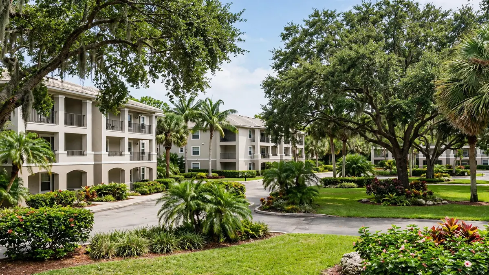

Emergency Water Cleanup in Hillcrest, Hollywood FL
ZIP Code: 33021

Hillcrest mixes condo communities with single-family streets, which means water losses here often involve more than one household. Hollywood Water Damage Experts provides emergency water cleanup for Hillcrest and ZIP 33021. We handle extraction, moisture mapping, structural drying, and careful documentation after leaks, floods, burst pipes, or sewage backups — for owners, associations, and managers.
Water Emergencies We See in Hillcrest
Multi-unit buildings concentrate plumbing: shared drain stacks, upper-floor supply lines, and water heaters tucked into utility closets. When one fails, water moves vertically — a burst hose on an upper floor becomes a ceiling problem below. Single-family pockets face the familiar roster of appliance leaks, roof drips, and storm intrusion. Either way, the question is always how far the moisture traveled, not just where it started.
Shared buildings need shared clarity. We respond to Hillcrest prepared to document unit-by-unit conditions so owners, neighbors, and associations can see exactly what was affected and where responsibility lines fall. Moisture mapping across ceilings, walls, and floors keeps the drying honest — and the records clean for everyone involved.
What Local Water Cleanup Looks Like
After securing the source and checking safety, we extract standing water and map moisture through every affected assembly — including adjacent and lower units when the loss spread. Drying equipment is placed by meter readings across the full path, monitored, and verified. We keep photo and moisture logs organized by area so the documentation is easy to share.
Contaminated water triggers containment and removal of unsalvageable materials before sanitization. Clean-water losses move to structural drying with the same thorough mapping. Throughout, we communicate plainly with whoever is on site and produce records suitable for associations, managers, and insurers.
Services Available for Hillcrest (33021)
Property owners in Hillcrest can request the full range of our Hollywood services, including:
- Emergency water extraction
- Flood cleanup
- Sewage backup cleanup
- Burst pipe cleanup
- Roof leak cleanup
- Structural drying
- Mold remediation support after water events
- Appliance leak cleanup
For the complete list, visit all water cleanup services. Neighborhood coverage for the rest of the city is listed on our service areas page. The main overview of water damage restoration in Hollywood, FL is on the homepage.
Insurance Documentation and Clear Communication
Many sudden water losses are claimed under homeowners or commercial policies. We do not decide coverage. What we provide is a clear record of conditions and work: photos, moisture readings, and a straightforward description of what was done. That information helps you and your adjuster understand the scope. If you need help understanding the next administrative step, we can point you to practical next actions without overpromising on claim outcomes.
How to Get Help in Hillcrest
Call (754) 294-7959 for 24/7 emergency response in Hillcrest and ZIP 33021. Tell us what you see, whether water is still flowing, and any safety concerns such as electrical panels near wet areas. A crew is dispatched with the equipment needed for extraction and drying. For non-emergency questions, the same number reaches the team during normal business windows.
Practical guides — what to do after water damage, how water categories work, and mold timing in Florida — are available on our blog.
Frequently Asked Questions — Hillcrest
The leak started in another unit. Who pays?
That is between owners, the association, and insurers — our role is documenting the origin, the spread, and the work, so everyone works from the same facts.
Do you coordinate with condo associations?
Yes. We share photos and moisture readings with management on request and keep our scope clearly defined.
Can you dry multiple units at once?
Yes — we scale equipment to the affected footprint and map each unit so nothing is missed.
What if my association requires specific documentation?
Tell us what they need. Our standard photo and moisture logs satisfy most requirements, and we can adjust format on request.